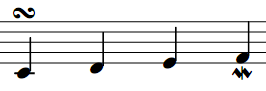

Idée reçue : "Pour faire de vraies belles partitions de musique, il faut investir dans des logiciels très chers. Autrement, autant les rédiger à la main".
Eh bien, chers amis, ce tutoriel est là pour vous prouver le contraire :D . Oui, désormais il est possible de réaliser de vraies partitions sans dépenser un seul sou, grâce à... Lilypond (ça fait peur comme nom, hein ? ^^ ) !
Dans ce tutoriel, nous allons voir pas à pas comment rédiger de vraies partitions avec ce logiciel : vous verrez au fur et à mesure à quel point son potentiel est énorme et peut même parfois surpasser celui des logiciels réputés que l'on peut trouver dans le commerce.
Pour cela, il vous suffit de cliquer sur le premier chapitre du sommaire et de plonger dans le monde merveilleux de ce fantastique logiciel de création de partitions (ça va, j'en fais pas trop, là ? :euh: ) !
Bonjour, bonjour ! Prenez place, ouvrez grand vos oreilles et vos yeux pour découvrir... Lilypond !
Nous allons commencer par une brève description de la bête pour voir concrètement à quoi elle sert, et surtout en quel cas elle peut nous être utile. C'est juste un petit chapitre, histoire de faire les présentations : rien de bien méchant, n'ayez crainte :D .
Ne vous êtes-vous jamais réveillés un matin en vous disant : "Tiens, et si j'écrivais une partition de musique ?!". Alors vous avez demandé autour de vous, fouiné sur le Web, mais vous n'êtes tombés que sur des programmes hors de prix. Refroidis, vous vous êtes résignés et l'idée est tombée dans l'oubli.
Eh bien aujourd'hui, c'est votre jour de chance (ou pas :D ) car vous allez découvrir un logiciel gratuit qui vous permet de réaliser des partitions de très grande qualité.
Cool ! Où c'est qu'on le trouve ?!
Attendez, il faut rajouter un léger bémol à cette présentation (eh oui ^^ ) : Lilypond est assez spécial, car il ne se présente pas comme les autres logiciels. En fait, il n'utilise pas d'interface graphique (donc pas de fenêtres avec des boutons), mais un langage particulier inventé spécialement pour le logiciel.
Mais ne vous inquiétez pas, je vais vous expliquer tout ça en détails. Lisez attentivement et tout se passera très bien ;) .
Pourquoi ?
Tout d'abord, la première question à se poser : dans quel cas Lilypond va-t-il m'être utile ?
En règle générale, Lilypond s'adresse à tous ceux qui veulent écrire des partitions de musique (que vous soyez compositeurs ou que vous vouliez simplement retranscrire une oeuvre préexistante) et qui n'ont pas particulièrement envie de le faire à la main :p .
Si vous êtes dans ce cas, Lilypond peut s'avérer une excellente solution, particulièrement si vous aimez avoir de belles partitions ou si vous avez besoin de notations complexes.
Lilypond, littéralement "La mare aux nénuphars" est un logiciel libre permettant de réaliser des partitions de très grande qualité avec un large panel de fonctionnalités et de symboles exploitables. Il était originellement conçu pour Linux mais un portage pour Windows a été réalisé grâce à Cygwin (programme qui permet d'émuler un système UNIX sous Windows, mais peu importe).
La particularité de Lilypond, qui est d'ailleurs la raison pour laquelle il a été créé, est que sa réalisation des partitions reprend la méthode de gravure traditionnelle de la musique.
... bon, c'est vrai que dit comme ça, ça surprend un peu :p mais vous allez comprendre ;) . Les réalisateurs du logiciel ont fait ce constat : les logiciels d'aujourd'hui, même les plus performants, commettent des erreurs de typographie musicale qui sans être nécessairement flagrantes donnent à la musique imprimée par ordinateur un côté mécanique, terne, austère, en bref : un peu moche.
Selon eux, les méthodes des graveurs donnaient aux partitions un côté beaucoup plus vivant, et c'est cette vitalité qu'ils ont voulu retranscrire et surtout automatiser dans la création de partitions avec Lilypond.
C'est vrai que l'idée peut paraître un peu déconcertante car vous ne vous en êtes probablement jamais rendu compte vous-mêmes, mais je vous assure que Lilypond produit vraiment de belles partitions dont la mise en forme est très agréable :) .
Cependant, comme je l'ai dit tout à l'heure, Lilypond ne dispose pas d'interface graphique (ah, je vous avais prévenus :D ). Non, contrairement à des sharewares comme Finale ou Guitar Pro, Lilypond utilise une syntaxe bien à lui avec des commandes, un peu comme le LaTeX, si vous connaissez.
Attendez, attendez, que je vous explique :p .
Comment ?
Du coup, pour réaliser une partition, il faut tout d'abord rédiger soi-même le code qui correspond à la partition que l'on veut écrire, puis ensuite l'envoyer à Lilypond qui est donc en réalité une sorte de compilateur, pour faire une analogie avec la programmation. Lilypond va alors produire un fichier au format PDF qui contiendra votre partition toute belle avec les portées et les notes.
Voici un schéma de la réalisation d'une partition avec Lilypond :
Je ne vous le cache pas : au début, c'est rébarbatif. On se dit que ça prend du temps, que c'est compliqué, que c'est lent... mais avec un peu de pratique, on fait de moins en moins d'erreurs de syntaxe et on peut écrire ses partitions très rapidement en profitant de la superbe mise en page de Lilypond :) . Bref, je vous assure : ça vaut le coup :D .
Pour finir, voilà le récapitulatif du potentiel de ce logiciel.
Points forts
Partitions de très bonne qualité
Mise en page et style "gravure" exceptionnels
Très grand nombre de fonctionnalités pour écrire différents styles de musique
Logiciel libre et dont le développement est en constante évolution
Points faibles
Pas d'interface graphique
Nécessité d'apprendre la syntaxe du langage
Rébarbatif pour les débutants
Bon : si vous ne vous êtes pas tous enfuis en courant, nous allons passer à l'installation de ce fameux logiciel :) .
N.B. : je vous recommande de faire un petit tour sur le site, par pure curiosité. Il y a tout une partie consacrée à la création de Lilypond avec un topo sur la qualité de la musique réalisée par ordinateur, c'est intéressant à lire ;) .
Téléchargez la version qui correspond à votre système d'exploitation.
Sous Windows, lorsque vous réalisez un fichier Lilypond, vous devez glisser-déplacer votre fichier sur l'exécutable du programme pour obtenir dans le même dossier votre fichier compilé en PDF et PostScript. Vous pouvez aussi faire un clic-droit sur le fichier à compiler et choisir Generate PDF. . ..
Sous Linux, une fois Lilypond installé, il vous suffit d'entrer la commande lilypond nom_du_fichier.ly pour que votre fichier soit compilé et transformé en fichiers PDF et PostScript.
Cependant, nous ne savons pas encore faire de fichier Lilypond, ni même quel logiciel utiliser pour ça.
Sous Windows, je vous recommande jEdit qui est l'un des seuls éditeurs à ma connaissance qui possède la coloration syntaxique de Lilypond (mais je ne les connais pas tous non plus ^^ ).
Vous le trouverez à cette adresse : Télécharger jEdit Et voilà à quoi ressemble l'interface :
Sous Linux, les éditeurs installés par défaut contiennent généralement la coloration correspondant à Lilypond. Si toutefois ce n'est pas le cas, vous pouvez toujours télécharger jEdit qui fonctionne aussi sous Linux (puisqu'il a été programme en JAVA).
L'interprétation du code
Lorsque vous envoyez votre fichier à Lilypond, il y a deux possibilités :
vous avez de la chance : tout se passe comme prévu, dans ce cas un fichier .pdf, un fichier .ps et un fichier .log (qui contient les différentes étapes de l'interprétation de votre code) sont générés ;
vous en avez moins : l'interprétation a échoué. Lilypond produit alors un seul fichier .log qui contiendra les erreurs décelées (en anglais) dans la partition.
L'interprétation du fichier peut échouer pour différentes raisons que nous aurons tout le temps de voir au cours des chapitres ;) .
Si vous voulez tester Lilypond, vous pouvez essayer de compiler le code suivant :
{c' d' e' f' g'}
N'essayez surtout pas de comprendre pour le moment : c'est uniquement pour tester.
Donc, comme on l'a vu tout à l'heure, si vos fichiers .pdf et .ps sont compilés, ça veut dire que tout s'est bien passé et que votre Lilypond est prêt à l'emploi.
Vous voilà donc fin prêts à partir pour l'aventure. Si le coeur vous en dit, rendez-vous au chapitre suivant ;) .
Pour le moment, ce n'est pas trop dur (et c'est même un peu ennuyeux :o ) ; de la théorie et du blabla, mais n'ayez crainte : on rentre bientôt dans le vif du sujet !
Maintenant, vous êtes prêts pour la bataille :D : logiciel, éditeur de code, coloration syntaxique et plug-in d'aide à la création de partitions pour les plus prévoyants.
Cependant, nous n'allons pas tout de suite commencer à écrire des partitions. En effet, il faut d'abord que je vous parle un peu de la façon dont les partitions fonctionnent sous Lilypond (oh, ce ne sera pas long ^^ ).
Après cette petite partie théorique, on passera à des choses plus amusantes, mais soyez attentifs ;) .
Avant de commencer à coder, il faut savoir certaines choses. Je vous préviens, c'est un petit peu rébarbatif mais c'est fondamental ; mieux vaut le savoir dès maintenant, comme ça vous n'aurez pas de problèmes par la suite ;) .
Les blocs de premier niveau
Tout d'abord, votre fichier doit généralement commencer par la commande suivante :
\score { }
Cette commande crée ce qu'on appelle un bloc score. La majorité des informations relatives à votre partition, à commencer par la musique (oui, dans une partition, ça peut servir :-° ) devront être entrées à l'intérieur de ce bloc, c'est-à-dire à l'intérieur des accolades.
En théorie, votre fichier peut contenir plusieurs blocs score, qui contiendra chacun un morceau (si vous écrivez un recueil d'études, par exemple). Si vous entrez plusieurs blocs à la suite, Lilypond se chargera de les regrouper automatiquement dans un bloc encore plus gros, le bloc book.
Mais bon, dans la pratique, on se contentera d'un seul bloc score par fichier, c'est déja assez de boulot comme ça :lol: !
Intéressons-nous maintenant au contenu de ce bloc, si vous le voulez bien.
Les expressions musicales & les contextes de notations
Comme je l'ai dit précédemment, le bloc score peut contenir différents éléments, dont la musique que vous écrivez. Retenez que tout ce qui sera rentré à l'intérieur du bloc doit appartenir à une seule et unique expression musicale.
Une expression musicale est représentée avec des accolades, comme on l'a vu. On a donc le code suivant :
\score
{
% contenu de l'expression musicale
}
Remarquez que dans ce code, le texte entré après le symbole % constitue ce qu'on appelle un commentaire : ce sont des informations qui ne sont utiles qu'à celui qui écrit le code (c'est-à-dire nous ^^ ), et qui sont totalement ignorées par Lilypond. Attention cependant, le symbole % n'affecte que la partie droite de la ligne sur laquelle il est placé : le texte écrit avant sur la même ligne n'est pas ignoré, ni le texte écrit sur les lignes suivantes.
Mais revenons à notre expression musicale :) !
On ne peut pas encore entrer directement nos notes de musique dans l'expression musicale. Il faut préciser quelques petites choses avant : le fait qu'on veut écrire à l'intérieur d'une seule voix sur une seule portée.
Dans Lilypond, les portées et les voix sont appelées des contextes de notation. Voici les principaux contextes existants :
Score : c'est le contexte de plus haut niveau dans lequel on entre un morceau de musique ;
Staff : c'est le contexte correspondant à une portée, contenant elle-même une ou plusieurs voix ;
Voice : c'est le contexte correspondant à une voix, dans lequel on entre nos notes.
Toutefois, il existe beaucoup d'autres contextes de notation, comme par exemple Lyrics qui permet d'entrer des paroles, ou TabStaff, d'entrer une tablature de guitare.
Nous avons déjà crée le contexte Score : c'est le bloc score qui s'en est chargé tout seul. Ce n'est cependant pas son seul rôle : il contiendra également toutes les informations relatives à notre morceau, en plus de la musique elle-même.
Cependant, pour créer les autres contextes manuellement, il faut utiliser la commande ew Nom_du_contexte, où Nom_du_contexte est à remplacer par le nom exact du contexte que vous voulez créer.
De plus, chaque contexte doit être associé à une expression musicale (eh oui, encore ^^ ), qui s'écrit immédiatement après la commande ew Nom_du_contexte.
Par conséquent, si je ne fais pas confiance à Lilypond et que je veux expliciter tous mes contextes pour mon morceau à une portée et une voix, j'écrirai ceci :
\score
{
\new Staff
{
\new Voice
{
% là, je peux entrer ma musique
}
}
}
Il y a plusieurs choses à remarquer :
d'abord, comme je l'ai dit au-dessus, on ne déclare pas le contexte Score parce qu'il a été déclaré pour de bon à partir du moment où nous avons ouvert le bloc score ;
vous remarquez aussi qu'on peut bien sûr imbriquer les expressions musicales les unes dans les autres (heureusement pour nous).
Maintenant, j'ai une bonne nouvelle : on peut faire plus simple :D ! En effet, dans notre cas assez trivial où il n'y a qu'une seule portée avec une seule voix dedans, on peut carrément écrire ceci :
{ % la musique }
Et toc ! Lilypond comprendra tout seul qu'il faut ajouter un bloc \score, un contexte Staff et un contexte Voice, pour y placer la musique qu'on a écrite.
Attends, mais alors pourquoi tu nous a expliqué tout le reste ?
Parce que je préfère tirer ça au clair dès le départ : on va se concentrer sur d'autres problèmes dans le prochain chapitre mais un peu plus tard, on va aborder la notation en parallèle, et là ces connaissances deviendront utiles, faites-moi confiance :) .
Oh, une dernière chose : bien évidemment, dans la majorité des exemples de ce tutoriel, je ne déclarerai pas explicitement tous ces contextes à moins que ce ne soit nécessaire.
Maintenant qu'on a vu comment créer une expression musicale vide, ce serait sympa de savoir y mettre quelque chose (... si, ce serait bien :o ) !
Les noms des notes
Pour entrer des notes sous Lilypond, il suffit d'écrire leur nom en notation anglaise et en minuscules, comme ceci :
{ c d e f g a b c }
Le "c" par défaut de Lilypond correspond au Do situé entre le deuxième et le troisième interligne en clé de Fa.
Et si on veut mettre des notes à des octaves différentes ?
Pour cela, il suffit de rajouter un ' juste après le nom de votre note pour la mettre à l'octave supérieure et il faudra lui rajouter un , pour la mettre à l'octave inférieure.
En fait, vous pouvez mettre n fois ' ou , pour augmenter ou descendre votre note de n octaves.
Si vous avez un trou de mémoire, ce tableau devrait vous aider à retrouver le nom des notes en anglais :
Notation italienne
Notation anglaise
Do
C
Ré
D
Mi
E
Fa
F
Sol
G
La
A
Si
B
Cependant, si vous vous sentez mal à l'aise avec la notation anglaise, sachez qu'il est possible d'utiliser la notation italienne que nous connaissons. Petite parenthèse...
Utiliser la notation italienne
Si jamais vous voulez utiliser la notation "Do-Ré-Mi-Fa-Sol-La-Si" qui est enseignée en France, vous devez rajouter au tout début de votre partition, en dehors de tout contexte la ligne suivante :
\include "italiano.ly"
Maintenant, nous allons voir comment définir des rythmes pour ces notes.
Les rythmes
Avec Lilypond, la durée d'une note est indiquée grâce à un chiffre placé juste après le nom de la note.
Ces chiffres correspondent aux divisions de la ronde :
1 : une ronde ;
2 : une blanche ;
4 : une noire ;
8 : une croche ;
16 : une double-croche ;
32 : une triple-croche ;
64 : une quadruple-croche.
Ainsi, pour entrer "Do Ré Mi Fa" en croches, on écrira :
{ c8 d8 e8 f8 }
Seulement voilà : ces huit partout, c'est long à écrire et en plus ça rend la lecture difficile. Heureusement, les développeurs ont inventé une petite astuce bien pratique pour nous faciliter la vie : lorsque la durée d'une note est précisée, toutes les notes suivantes ne possédant pas d'indication de durée auront la même durée que cette note.
Donc, je pourrais tout aussi bien écrire :
{ c8 d e f }
Au fait, qu'est-ce qu'on écrit en premier après le nom de la note, l'octave ou la durée ?
Bonne question : retenez qu'on indiquera d'abord l'octave puis la durée en dernier, ce qui est un peu logique, quand on y pense. D'abord on nomme la note, puis on la positionne sur la portée, et ensuite on peut s'occuper de sa durée.
Les figures de silence
Une dernière chose : pour représenter les silences, on utilise les mêmes indications de durée que pour les notes, mais précédées cette fois-ci de la lettre "r" (pour "rest"), comme ceci :
{ r8 d e f }
Ce qui donnerait :
Vous pouvez donc alterner les silences et les notes à votre guise dans la partition :) .
Tant qu'on y est, on va voir aussi comment lier deux notes de même hauteur pour former un rythme spécifique : il suffit d'ajouter ce joli petit symbole entre les deux notes à lier : ~ [obtenu en appuyant sur Alt Gr + 2].
Par exemple, si je veux prolonger une note d'une mesure à une autre en 4/4 :
{ c4 d8 e d e f4 ~ f }
Ce qui donnerait :
On appelle ces liaisons des liaisons de prolongations, à ne pas confondre avec les indications de phrasé, qu'on ne verra que dans la deuxième partie du tuto :) .
Pfiou, c'était un gros morceau.
Beaucoup de théorie, mais c'est malheureusement nécessaire : ce que je viens de vous raconter, ce sont les bases de l'écriture musicale avec Lilypond. Il est impératif que vous reteniez ça avant de passer à la suite.
Je vous conseille d'ailleurs dès maintenant d'essayer d'écrire de petites mélodies de façon à vous habituer à la notation de Lilypond.
N.B. : si vous suivez ce conseil, attendez cependant un peu avant de faire de la notation à plusieurs voix ou à plusieurs portées. Nous verrons ce procédé en détails dans quelques chapitres, c'est promis ;) .
En tous les cas, je vous conseille de faire une pause avant de passer à la suite, histoire de laisser tout ça décanter pour que vous ne l'oubliiez pas. Une fois encore : ce sont les bases, vous ne pourrez rien faire sans ;) .
On a vu dans le chapitre précédent comment placer une note sur la portée.
Ce chapitre-ci va nous permettre d'approfondir un peu plus la façon de définir la hauteur d'une note, avec en particulier une méthode très utile : le positionnement relatif des notes.
C'est une notion un peu surprenante, au premier abord, mais qu'il vous sera nécessaire de maîtriser pour écrire vos partitions rapidement par la suite. Vous allez voir que ça simplifie drôlement la vie !
On va commencer par quelque chose de simple : comment définir une clé pour un fragment de musique (ce qui est quand même important).
Pour insérer une clé dans un morceau, on utilise la commande \clef avec comme paramètre le nom de la clé correspondante. Voici les différentes clés prises en charge :
treble : clé de sol ;
alto : clé d'ut 3 ;
tenor : clé d'ut 4 ;
bass : clé de fa ;
french : clé de sol 1ère ligne ;
soprano : clé d'ut 1ère ligne ;
mezzosoprano : clé d'ut 2e ligne ;
baritone : clé d'ut 5e ligne ;
varbaritone : clé de fa 3e ligne ;
subbass : clé de fa 5e ligne.
Il est très peu probable que vous ayez recours à toutes ces clés, mais si jamais il vous prend la folle envie d'écrire un morceau en clé de fa 5e ligne, vous saurez comment faire :p .
Plus sérieusement, en règle générale, vous n'aurez besoin que de la clé de sol (treble), la clé de fa (bass) et occasionnellement les clés d'ut 3 et 4 (alto et tenor).
Sachez qu'il est également possible d'utiliser des clés transposant à l'octave supérieure ou inférieure. Pour cela, vous devez ajouter ^8 ou _8 devant le nom de la clé.
Vous pouvez bien entendu ajouter autant de changements de clé que vous le voulez ;) .
Je vous propose de faire un petit exercice pratique histoire de mettre tout ça en application.
Maintenant, ouvrez grand vos yeux et vos oreilles car nous allons aborder le principe le plus important de l'écriture musicale avec Lilypond : la notation relative.
Et... c'est quoi :o ?
La théorie
Voilà le principe. On choisit une note de référence, par exemple le Do grave en clé de Sol, qui s'écrirait donc c' dans la notation que l'on a vue jusqu'ici, appelée notation absolue (par opposition à la notation relative). Après ça, on va écrire toutes les notes qui suivent relativement les unes par rapport aux autres. Je m'explique.
Si l'on écrit la note qui suit sans changement d'octave (sans ' ou ,), alors le logiciel entrera la note demandée de sorte que l'intervalle visuel (c'est-à-dire ne tenant pas compte des altérations) entre la note d'origine et la note entrée soit plus petit ou égal à une quarte.
Visuellement, voilà ce que ça donne :
Cela revient à dire que, avec une note de départ appelée A :
si je veux la note B la plus proche de A, je devrai l'écrire B ;
si je veux la note B qui est à plus d'une quarte en dessous de A, je devrai l'écrire B, ;
si je veux la note B qui est à plus d'une quarte au-dessus de A, je devrai l'écrire B'.
Un exemple pour s'entraîner
Je commence avec un Do grave en clé de Sol (c' en notation absolue).
Je veux maintenant rajouter un Si grave juste après mon Do grave. Mais il y a plusieurs Si possibles (entre autres) :
le Si juste en dessous ;
le Si sur la troisième ligne.
Lequel de ces deux Si est le plus proche de mon Do du départ ? Celui situé juste en dessous, bien sûr, et c'est celui que je veux ! Donc je l'écrirai b tout simplement.
Si j'avais voulu mettre le Si situé à plus d'une quarte au-dessus, j'aurais écrit b'.
Et après, on refait le même raisonnement pour chaque note, par rapport à la note qui la précède.
Donc, si je voulais mettre un Mi aigu après mon Si grave, je devrais écrire e'. Et si après ce Mi aigu, je voulais mettre un Ré grave ? Eh bien j'écrirais d, .
Voilà ce que ça donnerait :
La commande
Maintenant, voici la commande utilisée pour la notation relative :
\relative note_de_reference
{
% expression musicale en notation relative
}
À la place de note_de_reference, on met la note qui va nous servir de départ (c' dans notre exemple) et ensuite, on met l'expression musicale qu'on veut, entre accolades bien entendu, comme toute expression musicale qui se respecte ;) .
À ce propos, bien évidemment, la commande elative doit être suivie d'une expression musicale (enfin, pas de nécessairement, ou du moins pas directement ; on en reparlera au cours de la partie sur la notation en parallèle).
On regarde notre exemple encore une fois :
Et voilà donc le code correspondant :
\relative c'
{c b e' d,}
... Pfiou, quand même, tout ça pour quatre pauvres notes, c'est pas exagéré ?
Désolé de vous dire ça encore une fois mais... non :p . Bien sûr, la première fois, ça paraît complètement fou de se triturer l'esprit pour écrire une ligne mélodique de dix notes, mais à force on s'y habitue (comme toujours !).
La première question qu'on se pose quand on découvre la notation relative :
Pourquoi n'écrit-on pas toutes les notes avec des ' et des , en notation absolue sans se prendre la tête ?
Pour plusieurs raisons :
paradoxalement, il est plus facile de se tromper de hauteur avec la notation absolue ;
l'écriture est beaucoup plus légère avec la notation relative ;
il est facile de repérer ses erreurs car dès qu'une note est mal placée en notation relative, toutes les notes qui suivent le sont aussi (autant vous dire que ça saute aux yeux sur une partition ^^ ).
Faites des tests, encore et encore, vous verrez que ça ira de plus en plus vite dans votre tête et que la notation relative deviendra presque un automatisme pour vous :) .
Et cette fois encore, il est très important d'avoir bien assimilé cette notion avant de passer à la suite ;) .
Jusqu'à présent, on a vu l'ossature d'une partition sous Lilypond, comment placer des notes et comment définir leur hauteur.
Seulement, on n'en a pas encore fini... :-°
Ben oui ! On ne sait pas encore délimiter des mesures, indiquer des reprises ni même indiquer la signature du temps... Il nous faut pallier ce manque en vitesse :D !
Donc dans l'ordre, nous verrons comment indiquer la signature du temps, puis comment délimiter mesures et reprises et enfin, on verra un petit point de rythme que je n'avais pas abordé jusqu'ici.
La signature du temps, je vous le rappelle, ce sont les deux chiffres que l'on trouve en début de morceau.
Elle peut être binaire :
le chiffre du haut correspond au nombre de temps par mesure ;
le chiffre du bas correspond à la valeur d'un temps (en divisions de la ronde).
... ou elle peut être ternaire :
le chiffre du haut correspond à 3 fois le nombre de temps par mesure ;
le chiffre du bas correspond à 1/3 du temps (toujours en divisions de la ronde).
Eh, mais t'avais dit que tu nous ferais pas un cours de solfège. C'est pas ce que t'es en train de faire, là ?
Si, vous m'avez eu :D . En fait, je préfère mettre cette notion au clair parce qu'elle va nous être utile et tout le monde ne la connaît pas forcément : on l'explique rarement comme ça au conservatoire alors que c'est la définition la plus rigoureuse ;) .
Bon, maintenant que ce point-là est réglé, on va pouvoir voir comment définir la signature du temps avec notre cher Lilypond !
Du côté de Lilypond
La commande de base pour définir la signature du temps est ime chiffre1/chiffre2 où chiffre1 et chiffre2 sont les deux chiffres de la signature.
Par exemple, si je veux une mesure décomposée en 4 noires (donc du 4 / 4), j'écrirai tout simplement :
{
\time 4/4
% suite de l'expression musicale...
}
L'avantage de cette commande est que vous avez une totale liberté quant à la composition rythmique de vos mesures. D'une part, vous pouvez changer de signature quand l'envie vous prend (il vous suffit alors d'insérer un nouveau ime à l'endroit voulu) et d'autre part, vous pouvez utiliser des signatures complexes comme le 7 / 8.
N.B. : vous pouvez même laisser libre cours à votre folie créativité artistique en faisant des mesures hors-normes... pourquoi pas du 22 / 8 ? :D
Vous voyez qu'on peut déjà bien s'amuser avec cette commande ^^ .
Mais comment on fait pour indiquer si une mesure est binaire ou ternaire ?
À vrai dire... c'est inutile :p . Le binaire et le ternaire sont juste des "états d'esprit", mais dans une mesure à 6/8, que je sois en binaire ou en ternaire, il y aura toujours six croches :) .
Oh, et une dernière chose...
L'anacrouse
L'anacrouse (mesure incomplète au début du morceau) s'insère avec la commande suivante : \partial durée_anacrouse où durée_anacrouse représente le nombre de temps composant l'anacrouse.
Pour indiquer ce nombre de temps, on écrira : valeur_de_temps * nombre_de_temps où valeur_de_temps correspond à la représentation du temps en divisions de la ronde.
Par exemple, si je veux ajouter une anacrouse de 3 double-croches au début de mon morceau, j'écrirai :
{ \partial 16*3 }
Ce qui donne, en l'intégrant dans un fichier exemple plus complet :
{
\time 4/4
\partial 16*3 c16 d e
c4 d e f
}
Maintenant, nous allons nous intéresser aux barres de mesure, si vous le voulez bien ;) .
Les barres de mesure servent à délimiter les mesures dans un morceau ou à indiquer des reprises.
Commençons par les barres de délimitation des mesures.
La délimitation des mesures
Les mesures classiques
Les mesures "classiques" sont les mesures présentes tout au long du morceau, délimitées par le simple symbole |.
Il y a deux façons de représenter ces mesures sous Lilypond :
recommandé : retourner à la ligne après la notation de chaque mesure ;
déconseillé : écrire tout à la suite en séparant les mesures par des "|" ;
over-déconseillé : écrire tout à la suite sans délimitation.
Je vous recommande fortement d'adopter la première méthode, car autrement vos partitions seraient... comment dire... illisibles :D .
Sachez que dans tous les cas, c'est Lilypond qui s'occupe de placer correctement les barres de mesure en fonction des rythmes indiqués : ça n'a donc à la rigueur que peu d'importance, mais si vous n'utilisez pas la première méthode, je vous assure que vous aurez beaucoup de mal à vous relire !
Les mesures finales
Les mesures finales sont représentées par deux barres où la deuxième est plus épaisse que la première. Pour insérer une barre de mesure de la sorte, il faut utiliser la commande \bar "type_de_barre".
Le type de barre que l'on veut en l'occurrence se représente comme ceci : "|.".
On écrira donc, après la dernière mesure de notre morceau :
\bar "|."
N.B. : il existe aussi une autre barre représentant une fin de cadence, mais non la fin du morceau (on en trouve par exemple dans la musique de John Dowland, compositeur baroque pour le luth). Elle est constituée de deux barres de même épaisseur, et s'écrit "||" sous Lilypond.
Maintenant, nous allons nous intéresser aux reprises. C'est un peu plus complexe car on a plusieurs possibilités. Vous allez voir... ;)
Les reprises
Première méthode
La technique la plus simple pour indiquer des reprises consiste simplement à insérer des barres de reprise comme sur les partitions, toujours avec la commande \bar.
Les deux dont vous aurez besoin sont les suivantes :
\bar "|:"
\bar ":|"
Cependant, il existe sous Lilypond une autre syntaxe permettant d'indiquer les reprises.
Deuxième méthode
Il existe une autre commande qui permet de délimiter des passages à répéter. Voici sa syntaxe : epeat type_de_reprise nb_de_reprises { expression_à_répéter } Le paramètre type_de_reprise sera toujours le même pour nous : volta. Ce type de reprise indique que l'expression à répéter sera encadrée de double-barres de reprise. Ainsi, si je veux répéter ce fragment : c d e f> deux fois, j'écrirai :
\repeat volta 2 {c d e f}
Ok, mais quel est l'intérêt d'utiliser cette méthode plutôt que la première ?
Bonne question ! En fait, cette commande va devenir intéressante lorsque l'on voudra utiliser une fin alternative pour le fragment à répéter, comme ceci :
Pour appliquer des fins alternatives, il faut ajouter après le bloc epeat la commande \alternative. Sa syntaxe est : \alternative {{fragment1} {fragment2} {fragment3} ...}
Les blocs fragment1, fragment2, etc. correspondent aux expressions musicales que l'on veut utiliser alternativement comme fins.
Par exemple, pour l'image précédente, on écrirait ceci :
\relative c''
{
\time 2/4
\repeat volta 2 {c d}
\alternative
{
{ b2 | c }
{ c4 d | e2 }
}
}
Nous allons finir ce chapitre assez lourd avec une notion assez simple dont je n'ai pas vraiment eu l'occasion de vous parler : les nolets.
La théorie
Les nolets sont des groupes de notes dont la valeur de chaque note est multipliée par une fraction déterminée. Présenté de cette façon, ça ne vous parle peut-être pas beaucoup, mais si je vous dis que le célébrissime triolet n'est autre qu'un nolet dont chaque membre est multiplié par la fraction 2/3, tout devrait devenir clair et limpide pour tout le monde (normalement :p ) !
Je m'explique. Dans un triolet, on veut faire entrer trois croches dans la durée de deux. Cela signifie donc que la durée de chaque croche va être multipliée par 2/3.
Si vous n'êtes pas à l'aise avec cette logique mathématique, retenez simplement la phrase : "On divise le nombre de notes dans lequel doit entrer le nolet par le nombre de notes contenues dans le nolet."
Par conséquent, dans un quintolet (5 double-croches dans la durée de 4), on multiplie chaque note par la fraction 4/5.
Passons maintenant à la commande correspondante :) .
La commande Lilypond
Sous Lilypond, on écrit les nolets comme ceci : imes fraction { expression } fraction correspond à la fraction par laquelle doit être multipliée chaque note du nolet et { expression } correspond au nolet.
Si je veux entrer le quintolet de tout à l'heure, j'écrirai donc :
\times 5/4 { ... }
Rien de bien compliqué ^^ .
Une petite remarque intéressante : vous pouvez imbriquer des nolets (puisque l'on peut imbriquer des expressions musicales). Bon, ce n'est pas le genre de chose qui sert tous les jours, mais c'est toujours utile de savoir que ça existe :p .
Par exemple, si je suis en 2/4 et que je veux faire entrer dans une seule mesure 2 noires + 3 croches (c'est tordu, je sais ^^ ), je devrais écrire :
\times 2/3 {c4 d \times 2/3 {c8 d c}}
Et voilà le rendu (en complétant le code précédent) :
Mine de rien, on a vu pas mal de choses ! Ce n'était pas toujours très compliqué, mais il faut retenir beaucoup de nouvelles commandes ainsi que les syntaxes qui leur sont associées.
En contrepartie, vous commencez à en savoir un peu plus : vous pouvez déjà sentir le potentiel de Lilypond, et même aborder un peu ses limites :) .
Le prochain chapitre sera pour vous l'occasion de vous reposer un peu avec des notions plus connues du commun des mortels, c'est-à-dire les tonalités et les altérations ;) .
Voilà un chapitre assez simple pour des notions très importantes :) . On va voir en premier lieu comment indiquer une tonalité et son mode tonal (majeur ou mineur) puis on s'intéressera à l'insertion d'altérations dites accidentelles, c'est-à-dire (même si je ne suis pas censé le préciser ^^ ) qui ne sont pas présentes à l'armure, mais qui apparaissent occasionnellement dans le morceau.
La tonalité du morceau est représentée, comme vous le savez, par un certain nombre de dièses ou de bémols au début d'une mesure dans le morceau. Je dis bien au début d'une mesure et non pas seulement au début de la première puisque, comme vous l'aurez deviné, Lilypond nous permet d'ajouter des changements de tonalité quand on le souhaite, ce qui est très pratique quand on fait des modulations complexes :) .
La commande à utiliser est la suivante :
\key [ton] \[mode]
ton : note correspondant à la tonalité choisie (a, b, c, d, etc.). mode : \major ou \minor si la tonalité est majeure ou... mineure.
Un exemple, c'est toujours ça de pris : je veux écrire en Mi majeur.
\key e \major
Rien de bien compliqué ici. Seulement deux remarques.
1. Quand on passe à une tonalité plus grave que la tonalité précédente, par exemple de Sol Majeur à Do Majeur, Lilypond affiche à l'armure les bécarres indiquant la "régression" vers la nouvelle tonalité. Concrètement :
Il y a moyen d'empêcher cela, mais on le verra plus tard (je dis ça souvent, mais ça viendra, faut pas vous en faire :p ).
2. Plus important : dans votre morceau, vous devez indiquer toutes les altérations, même celles induites par la tonalité dans laquelle vous vous trouvez. Bon : maintenant, le problème, c'est qu'on ne sait pas comment en mettre, des altérations accidentelles... Eh bien c'est justement ce qu'on va voir maintenant (appréciez la transition de fou ^^ ) !
On sait donc qu'on ne peut pas échapper aux altérations, mêmes si elles sont déjà indiquées à l'armure. On n'a pas le choix, va falloir apprendre comment les indiquer !
En réalité, c'est très simple :
pour indiquer un dièse, on ajoute is juste après le nom de la note (ex. : cis4 pour un do dièse sous forme de noire) ;
pour indiquer un bémol, on ajoute es juste après le nom de la note (ex. : bes4 pour un si bémol sous forme de noire).
Je reconnais que ce n'est pas très parlant pour nous autres Français, et pour cause, ces abréviations sont issues de la notation musicale germanique et nordique. Bon, on s'y fait :p .
Pour les altérations doubles (double-dièse et double-bémol), il suffit de doubler le suffixe utilisé, c'est-à-dire qu'on utilise isis pour un double-dièse et eses pour un double-bémol, de même qu'on utilise dd et bb en notation française.
Toujours un petit exemple pour pratiquer. Je veux écrire ça (la tonalité choisie est Do# mineur) :
Comment ça, j'aime les exemples tordus ? :p Meuh non, pas du tout...
Deux remarques ici (trois, en fait) : 1. on voit bien que l'altération vient bien directement après le nom de la note, comme un suffixe au nom lui-même ; 2. on n'oublie pas que le Do# doit être écrit explicitement, ce dont on se rend bien compte car le deuxième Do, écrit sans altération, est noté bécarre sur la partition.
Bon, je reconnais que c'était plutôt court, mais j'ai vraiment rien de plus à vous dire ^^ . En fait, j'hésitais à rajouter un rappel de solfège sur l'utilité des double-dièses et des double-bémols, mais je me suis dit que ça commençait à faire beaucoup de théorie. Enfin bon, comme j'ai mauvaise conscience, retenez simplement si vous ne le savez pas que ces altérations s'avèrent utiles en modulation.
Rien de spécifique à ajouter, je crois qu'on peut passer à la suite. Nous avons un chapitre suivant assez lourd : la notation en simultané, qui sert à écrire des notes en même temps (donc des accords), mais aussi des voix ou même des portées. Que du bonheur :D !
Bon, là je vous conseille d'être bien attentifs, on attaque une nouvelle notion théorique dont on se servait sans vraiment s'en rendre compte jusqu'ici : la notation en simultané.
Cette technique a plusieurs applications en musique, c'est pourquoi il faut nécessairement qu'on s'y attache.
On va d'abord s'intéresser à la théorie, puis on verra plusieurs applications pratiques, dont la notation d'accords.
Si vous vous souvenez bien, dans le deuxième chapitre de ce tuto, je vous avais dit qu'on aborderait la notation pour plusieurs portées ou plusieurs voix plus tard.
Eh bien figurez-vous que c'est précisemment de quoi il est question ici. En fait, le concept de notation en simultané correspond de façon théorique à l'impression "en parallèle" de vos expressions musicales sur la partition.
De manière générale, pour imprimer des expressions musicales en parallèle sur la partition, on utilise les symboles suivants : << >> .
Ainsi, pour écrire deux expressions en simultané, j'écrirai :
<<
{ a b c d }
{ c e f g }
>>
Et le code complet serait :
\score
{
<<
{ a b c d }
{ c e f g }
>>
}
J'en profite pour vous parler d'un point délicat qui n'est pas réellement tiré au clair dans la documentation de Lilypond : le bloc score est toujours suivi d'une expression musicales entre accolades. Toutefois, des commandes comme elative et ew peuvent être suivies d'un bloc d'expressions en parallèle (délimité avec des << >>) ou peuvent même s'enchaîner elles-mêmes directement ! Ainsi, le code suivant est correct :
\score
{
\new Staff
{
\new Voice
\relative c'
<<
{ a b c }
{ a c d }
>>
}
}
Bon, revenons-en à la notation en parallèle.
Cette technique peut s'utiliser à différents niveaux au sein de la partition. Concrètement, voilà quels sont les utilisations possibles de la notation simultanée :
notation d'accords ;
notation à plusieurs voix ;
notation à plusieurs portées ;
... ou de façon plus générale : notation à plusieurs contextes.
C'est là que ça devient sympa :) ! On va maintenant pouvoir s'intéresser à chacune des applications mentionnées au-dessus. Au boulot !
Les accords
Un accord, vous le savez bien, c'est "plusieurs notes en même temps". Aha ! On va donc pouvoir utiliser le super-outil qu'on a découvert. Pour faire un accord, il faut, à l'intérieur d'une expression musicale, mettre les notes composant l'accord à l'intérieur des << >>. Concrètement :
{
<< c4 e g >> d e f
....
}
Ainsi, les notes sont affichées simultanément dans une même expression à l'intérieur d'une même voix : elles forment donc un accord !
Allez, ça c'est fait, on passe à la suite ! ;)
Plusieurs voix sur une même portée
C'est un concept qu'on ne perçoit pas forcément bien ; pour que vous compreniez, voici un exemple de notation à deux voix sur une même portée (réalisé bien évidemment avec Lilypond ^^ ) :
(Oui, je sais, les queues de la voix du haut devraient être vers le haut, ou alors celles de la voix du bas vers le bas, mais ça se rectifie, on va voir comment !)
Si vous jouez du piano, ou du moins si vous aimez Beethoven, on a un très bel exemple de deux voix sur une portée, qui sont d'ailleurs jouées à la même main, dans sa Sonate "Au Clair de Lune" (je ne vais pas vous donner le numéro de la sonate pour faire puriste parce que de toute façon, je ne le connais pas :p ).
Bref, tout ça pour dire qu'ici, on va pour la première fois avoir besoin de déclarer explicitement nos contextes de notation. En effet, si on commence directement la partition avec des expressions écrites en simultané, comment Lilypond va-t-il décider s'il doit mettre ces expressions en simultané au sein d'une même portée ou bien en tant que portées distinces ?
C'est donc pour ça qu'on doit obligatoirement déclarer ici les contextes Voice et le contexte Staff pour dire clairement à Lilypond : "Je veux que tu me mettes ces expressions en parallèle dans des voix distinctes au sein d'une même portée !".
Exceptionnellement, je vous donne le code complet (incluant le bloc score) :
\score
{
\new Staff
<<
\new Voice
\relative c''
{
\clef treble
c4 e g e
}
\new Voice
\relative g
{
g16 a b a g a b a g a b a g a b a
}
>>
}
Cependant, c'est quand même assez long d'écrire ça de cette façon (si, quand même !).
C'est pourquoi nos chers concepteurs ont inventé un raccourci : on enlève les déclarations explicites des Voice, et on sépare les deux expressions musicales par un \\ :
\score
{
\new Staff
<<
\relative c''
{
c4 e g e
}
\\
\relative g
{
g16 a b a g a b a g a b a g a b a
}
>>
}
Personnellement, je recommande la deuxième méthode ; après, à vous de choisir.
Maintenant, intéressons-nous au problème rencontré tout à l'heure : l'orientation des queues.
Pour paramétrer l'orientation des queues des notes, mais aussi de tous les symboles musicaux possibles et imaginables, il existe quatre commandes que l'on insère à l'intérieur d'une voix : \voiceOne, \voiceTwo, \voiceThree et \voiceFour.
Ainsi, si l'on écrit :
\score
{
\new Staff
<<
\new Voice
\relative c''
{
\voiceOne
c4 e g e
}
\new Voice
\relative g
{
\voiceTwo
g16 a b a g a b a g a b a g a b a
}
>>
}
on obtient le résultat voulu :) !
Dis-moi, s'il n'y a que quatre commandes, ça veut dire qu'on ne peut gérer que quatre voix sur une portée ?
Non, en pratique on peut en gérer autant qu'on veut ; seulement, il n'y a que deux sens d'orientation possibles pour les queues : vers le haut ou vers le bas. Ainsi, les commandes \voiceOne et \voiceThree orientent les queues vers le HAUT, et les commandes \voiceTwo et \voiceFour les orientent vers le BAS.
Autre point important : si vous voulez annuler une orientation spécifique des symboles musicaux, utilisez la commande \oneVoice : elle annule l'effet de n'importe laquelle des quatre commandes citées précédemment.
Plusieurs portées
Maintenant, nous allons voir comment éditer plusieurs portées en même temps. On va tout d'abord s'intéresser au cas général et on verra ensuite les cas particuliers (comme la notation pour piano, par exemple).
La méthode générale
C'est assez évident : il suffit de mettre les contextes Staff entre des << >> :
\score
{
<<
\new Staff
\relative c'
{ c d e f }
\new Staff
\relative g'
{ g a b c }
\new Staff
\relative c'
{ c d e f }
\new Staff
\relative g'
{ g a b c }
>>
}
Et ce code nous donnera :
Oui, je ne me suis pas particulièrement foulé pour donner des exemples innovants dans ce chapitre, mais en ce moment, je manque un peu d'inspiration ^^ .
Maintenant, on va s'intéresser aux organisations spécifiques.
Les cas particuliers
Vous savez probablement que dans le cas du piano, les portées ne sont pas simplement alignées comme ça les unes sous les autres : il y a un système de portées, c'est-à-dire deux portées liées par une jolie accolade. Dans le cas du piano, il faut utiliser le contexte PianoStaff, comme ceci :
Enfin, dans le cas d'un ensemble (comme un quatuor à cordes, par exemple), on utilisera le contexte StaffGroup, comme ceci :
\score
{
\new StaffGroup
<<
\new Staff
{
% expression musicale
}
\new Staff
{
% expression musicale
}
\new Staff
{
% expression musicale
}
>>
}
Bonus Track
Puisque l'on parle de notation pour ensemble, j'ai pensé judicieux de vous indiquer ici comment donner des noms aux instruments que vous utilisez (par exemple : Violon 1, Violon 2, Guitare, etc.).
La commande utilisée est \set Contexte.instrumentName = "Instrument" . Il faut remplacer dans cette syntaxe Contexte par le contexte de notation dans lequel vous vous trouvez et Instrument par... le nom de l'instrument :p . Par exemple, pour nommer les deux portées d'une partition pour piano, il faudra écrire :
Dans cette partie, je crois finalement que le plus dur n'est pas la compréhension de la théorie, mais juste le fait de devoir retenir tous ces noms de contextes... Bah ! À force de pratiquer, on finit par les apprendre, c'est comme pour tout le reste. :) .
Ici, on va apprendre à indiquer à l'interprète de votre composition comment la jouer en respectant l'esprit de son créateur :D . On va commencer avec les indications de phrasé, les articulations et les nuances, puis l'on passera en revue différents ornements musicaux (comme les trilles, les appogiatures, etc.).
Je ne vous cache pas qu'il y aura pas mal de commandes et de notations à retenir, mais ça vaut le coup ^^ .
Le phrasé, ce sont des indications qui expriment la façon de jouer les... phrases. Le concept de phrase en musique est assez similaire à celui du langage : au même titre que les mots assemblés dans un certain ordre forment des entités de sens, les notes dans un morceau ne prennent de sens que quand elles sont mises à la suite, dans des phrases musicales.
Il y a deux indications fondamentales pour décrire le phrasé : les liaisons d'expression que j'appellerai librement "grands legatos" (c'est toujours plus classe en italien :p ), et des liaisons plus courtes, les liaisons d'articulation que j'appellerai "petits legatos".
Les grands legatos
Un grand legato est déterminé par la note de départ et la note de fin de la phrase musicale. On le note comme suit :
a\( b c c d b e\)
Un grand legato permet d'indiquer une phrase musicale entière, il couvre donc généralement plusieurs mesures.
Il y a moyen de forcer l'orientation d'un grand legato (dire à Lilypond s'il doit être orienté vers le haut ou vers le bas). Généralement, le logiciel s'en sort très bien tout seul mais sait-on jamais... (et puis, si vous êtes dans le genre chipoteurs, moi je veux pas d'ennuis ^^ ).
Il y a trois commandes possibles
Utilisez la commande \phrasingSlurUp pour que tous les grands legatos affichés soient orientés systématiquement vers le haut. Pour les orienter systématiquement vers le bas, utilisez la commande \phrasingSlurDown. Enfin, pour rétablir l'orientation automatique des grands legatos, utiliser \phrasingSlurNeutral.
Petite précision lexicale avant de passer à la suite : en anglais, les grands legatos sont appelés phrasing slurs (littéralement liaisons d'expression, comme chez nous), tandis que les petits sont appelés slurs tout court.
Allez, les petits, maintenant !
Les petits legatos
Le principe est le même, sauf que la notation est moins lourde :
a( d d)
On utilise ces petits legatos pour lier non pas toute une phrase mais juste deux ou trois notes entre elles ; si on voulait pousser l'analogie avec le langage, on pourrait dire que c'est l'équivalent des propositions à l'intérieur des phrases.
Et justement, tout comme les propositions s'imbriquent dans les phrases, on peut imbriquer les petits legatos dans les grands. Voyez plutôt :
c\( d e( f) g d\)
L'orientation des petits legatos, maintenant. Les commandes sont similaires, à part qu'on ne met plus phrasingSlur mais juste slur : \slurUp, \slurDown et \slurNeutral.
Cependant, il existe une astuce pour forcer l'orientation d'un petit legato plus rapidement. Écrire :
c^( d)
... forcera le legato à être affiché au-dessus des notes, tandis que
c_( d)
... forcera le legato à être affiché en-dessous des notes.
Intuitivement, ça se comprend bien vu que c'est similaire à la notation en exposant et en indice qu'on retrouve dans pas mal de programmes (l'éditeur d'équations d'OpenOffice, pour ne citer que lui).
En pratique, si vous voulez retenir quelque chose de l'orientation des legatos, gardez juste en tête cette petite astuce pour les petites liaisons, au cas où vous en auriez besoin. Cependant, Lilypond se débrouille en général très bien tout seul pour l'orientation des legatos, ce n'est donc pas hyper-important de connaître toutes les commandes d'orientation. Si jamais vous en avez besoin, vous n'avez qu'à revenir jeter un coup d'oeil par ici ;) .
Au fait, tant qu'on parle de phrasé, j'aborde ci-dessous un point qui pourra s'avérer utile.
Bonus track : lier les barres de ligature à la main
Dans certains cas, il peut s'avérer utile de forcer Lilypond à accrocher les queues de deux notes ensemble (avec ce qu'on appelle une barre de ligature). Il suffit d'utiliser les symboles [ et ] comme ceci :
c8[ d e f f e d] d
Comme vous pouvez le vérifier, les 7 premières notes seront ici toutes accrochées et la huitième sera isolée. Je ne m'étendrai pas plus là-dessus, je vous laisse essayer par vous-mêmes (astuce : rien ne vous empêche d'accrocher des figures de silences et des figures de notes - pourquoi ne pas essayer ;) ?).
Maintenant qu'on en a fini avec le phrasé, on passe aux marques d'expression.
Concrètement, on va s'intéresser à deux choses, ici : les articulations qui précisent la façon de jouer, l'attaque d'une note spécifique et toutes les nuances d'intensité sonore.
Les articulations
Lilypond met à notre disposition toute une kyrielle d'articulations (dont certaines que je n'ai jamais vues de ma vie, pour tout vous dire ^^ ). Elles se notent toutes de la même façon : après la note, on rajoute un - suivi du symbole approprié, comme ceci :
c'4-.
J'ai utilisé comme exemple le point "." qui indique un staccato (note piquée). J'ai volontairement surchargé la notation avec la hauteur de la note et sa durée pour vous montrer que l'articulation s'ajoute en dernier, après tout le reste.
De plus, comme pour les petits legatos, vous pouvez forcer l'orientation des articulations (même si, encore une fois, ça ne sert pas souvent), en remplaçant le - par un _ ou par un ^. En plus, vous pouvez ajouter plusieurs articulations sur une même note, en les mettant à la suite.
Exemple : si je veux indiquer qu'une note doit être jouée staccato et accentuée en même temps, et que je veux forcer les deux symboles à être affichés au-dessus de la note, je pourrai écrire ceci :
c^.^>
Et j'aurai le résultat suivant :
Maintenant, on va passer aux articulations proprement dites, que je vous ai récapitulées dans un petit tableau :
Nom
Code
Staccato
-.
Staccatissimo
-|
Marcato
->
Tenuto
--
Portato
-_
Ne vous inquiétez pas si les noms ne vous disent rien : personnellement, j'en connaissais deux :p . Visuellement, voilà le résultat :
Je n'ai indiqué que les "plus importantes", mais ils en ont implémenté de plus exotiques encore, que vous pourrez trouver dans la documentation :) .
Avant de passer aux nuances, je voulais juste vous parler d'une autre articulation utile : le point d'orgue, qui indique une pause dont la durée est plus ou moins à la discrétion de l'interprète. Contrairement aux autres articulations, celle-ci se note avec une commande explicite, toujours après la note : \fermata.
Notez que les symboles _ et ^ pour forcer le positionnement fonctionnent toujours de la même façon avec cette articulation :) .
Les nuances
Les nuances permettent d'indiquer l'intensité sonore du jeu, toujours avec des expressions italiennes (piano, forte, etc.). Comme d'habitude, Lilypond ne nous propose pas moins de dix-neuf nuances possibles :euh: . Encore une fois, je vous en donne les principales, et vous pourrez vous reporter à la documentation pour les autres (comment ça, je suis un flemmard :p ?).
On utilise une commande pour chaque nuance, qu'on ajoute après la note concernée, comme ceci :
c'4\f
N.B. : vous pouvez laisser un espace entre la note et la commande, faites comme bon vous semble.
Les principales nuances disponibles sont :
les nuances globales dérivées de piano : \ppp, \pp, \p, \mp ;
les nuances globales dérivées de forte : \fff, \ff, \f, \mf ;
les nuances de changement subit dérivées de forte : fz, \sfz, \fz.
Je ne pense pas qu'il soit nécessaire de les présenter, ce sont des nuances assez classiques, à part les dernières, un peu plus exotiques, généralement utilisées pour indiquer qu'on veut intensifier le son de façon soudaine.
Cependant, on n'en a pas encore fini avec les nuances : il nous reste encore les crescendos / decrescendos :) !
Les crescendos / decrescendos
Pour démarrer un crescendo après une note, on utilise la commande \<, comme ceci :
c4\<
Pour démarrer un decrescendo, vous l'aurez deviné :) , la commande est la suivante : \>.
Pour terminer un crescendo / decrescendo, deux possibilités s'offrent à vous :
utiliser la commande \! après la note de fin ;
sinon, le crescendo / decrescendo s'arrête à la prochaine nuance indiquée.
Par exemple, le code suivant :
c4\f \> d e e\pp
... donnera le résultat qui suit :
Vous voyez que ce n'est pas bien compliqué, mais que le résultat est très agréable. C'est l'un des avantages de Lilypond : avec deux petites commandes bien placées, on obtient un rendu visuel de grande qualité ;) .
Une dernière chose, tant qu'on parle d'intensité sonore : il existe un petit symbole composé d'un court crescendo suivi d'un decrescendo, que l'on place sous une seule note pour indiquer que son intensité sonore doit augmenter, puis diminuer. Pas la peine de vous casser la tête : pour ajouter ce symbole, il suffit d'utiliser la commande \espressivo à la suite de la note sous laquelle vous voulez le faire apparaître. Voilà le résultat :
Eh non, ce n'est pas encore fini ! Il nous reste à passer en revue quelques ornements très sympathiques ; courage :) !
Ornements non-explicites
Ici, il est donc question de tous ces symboles qui permettent de représenter des petites fantaisies musicales à rajouter entre les notes réellement représentées. Elles étaient très en vogue à la période baroque, mais plusieurs sont tombées en désuétude : on ne les trouvera plus que sur d'anciennes éditions ; dans les éditions d'aujourd'hui, elles sont généralement explicitées (remplacées par les notes à jouer réellement). Comme vous vous en doutez, Lilypond incorpore tous les ornements oubliés de la période baroque :D mais je vous renvoie encore une fois à la doc pour une liste exhaustive, et je me contente de n'en citer que les principales (cette fois, j'ai envie de faire une liste pour changer, tiens) :
gruppetto : urn ;
gruppetto inversé : everseturn ;
mordant vers le haut : \prall ;
mordant vers le bas : \mordent ;
trille : rill.
Ces commandes s'utilisent exactement comme les commandes de marques d'expression : on les place après la note concernée et on peut forcer leur positionnement avec les préfixes _ et ^ .
Mise en pratique :
c4\turn d e f_\mordent
Et voilà le résultat :

Des trilles plus longues
Comme vous l'avez peut-être remarqué, certaines trilles sur plusieurs mesures sont prolongées avec une jolie guirlande horizontale (je ne crois pas qu'elle ait un nom savant, mais guirlande me plaît ^^ ). Il est possible d'en faire avec Lilypond, mais cette fois la commande est différente :
on débute la trille avec la commande \startTrillSpan placée après la note de départ ;
on termine la trille avec la commande \stopTrillSpan placée après la note de fin.
Par exemple, ce code :
c1 \startTrillSpan
d1 \stopTrillSpan
... donnera le résultat suivant :
On passe maintenant aux ornements explicites.
Ornements explicites
On les appelle parfois notes d'agrément (grace notes en anglais, nettement plus gratifiant pour elles ^^ ). Cette fois, il faut bien évidemment entrer le nom des notes soi-même, en les faisant précéder de la commande appropriée. Il y a deux commandes possibles :
\appoggiatura pour les appoggiatures (attention, il y a deux p et deux g, ne vous trompez pas comme moi ^^ ) ;
\acciaccatura pour les appoggiatures "barrées", notes jouées encore plus rapidement.
Autre chose : dans les expressions musicales en appoggiature, toutes les notes sont séparées les unes des autres par défaut (n'allez pas me demander pourquoi :p ). Par conséquent, il est nécessaire de préciser soi-même les barres de ligature comme on l'a vu tout à l'heure avec [ et ] . Par exemple, le code suivant :
c4 \appoggiatura {d16[ c b c]} e4 d c
donnera ce résultat :
Enfin, sachez que naturellement, les notes en appoggiature ne sont pas prises en compte dans le rythme : elles ont une durée nulle, c'est-à-dire qu'on peut en rajouter autant qu'on veut dans une même mesure. D'ailleurs, certains compositeurs se font vraiment un plaisir de rajouter des notes d'agrément sur dix kilomètres :p ; je pense en particulier au fameux nocturne posthume de Chopin en Do# mineur qui fait pleurer tout le monde ; dans l'une des dernières mesures, il n'y a pas moins de trente-cinq notes d'agrément (on part du La, on arrive jusqu'au Ré trois octaves au-dessus et on redescend jusqu'au La). Donc, avec les notes d'agrément : faites-vous plaisir :D .
Bon ! Eh ben voilà, on en est arrivés à bout, finalement :) !
Je reconnais que je vous ai comme qui dirait bombardés de commandes et de symboles que vous ne retiendrez certainement pas du premier coup, mais c'était nécessaire. Ce chapitre était vraiment un chapitre-tournant : c'est à partir de maintenant que vos partitions développent vraiment une forme aboutie et que vous pouvez bénéficier de la puissance de Lilypond, bien qu'on soit loin d'avoir tout vu.
Cette fois plus que jamais, faites une pause et surtout faites beaucoup de tests pour assimiler peu à peu les commandes et les symboles les plus utiles. Avec ce chapitre, on a réellement franchi un cap au niveau esthétique et vous allez voir que la différence va se sentir ;) .